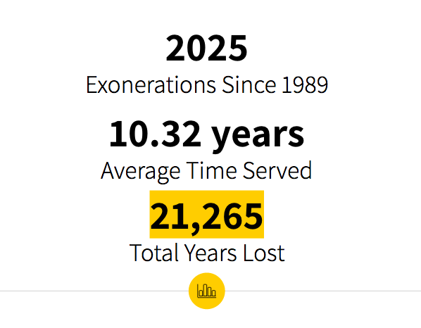
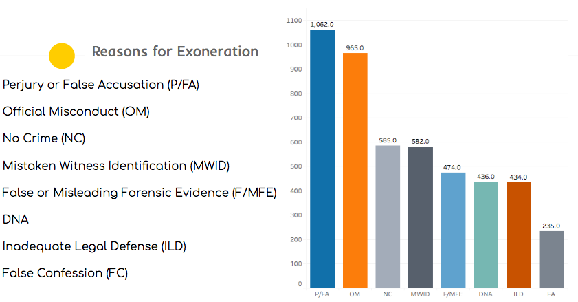
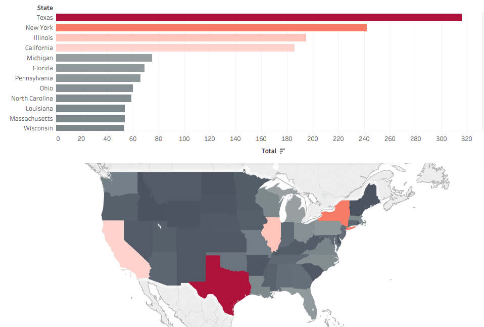

Analyzing the Data Behind Wrongful Convictions
For my capstone project at General Assembly’s Data Science Immersion Program, I chose to work with the National Registry of Exonerations Database. For some background, the database was started in 2012 by the University of Michigan Law School, Michigan State University College of Law and the University of California Irvine Newkirk Center for Science and Society. It contains detailed information about all known individual exonerations in the United States.
For the modeling portion of the project, I did a panel regression to predict the total number of exonerations per state for 2017. For this to work, I had to double index the data by year and state, which allowed me to get my target variable of total exonerations per year for any given state. A correlation heatmap I had previously made showed me that the age and years served variables both had positively correlated relationships with total exonerations. In order to use these as features for my model, I took the average age and average years served per state for every year. For the train/test portion, I split the data by years and used 1989–2010 as my training set and 2011–2017 for my testing set. In the end, my model gave me an adjusted R²score of 0.7105, meaning that I was able to explain 71% of the variance in my data.
While the data I had was rich in inference, its modeling potential was limited to regression. Fortunately, I was able to acquire additional federal and state prison population data from 1989–2015 from the Bureau of Justice Statistics website. Although the additional data contains only the raw population numbers by state for those years, it has the potential to illuminate trends in both incarceration and exoneration. For future analysis, I am interested in doing a Random Forest Regressor and using location as a predictive feature. Since a panel regression necessitates that your time and location data be locked as the indexes, it wasn’t possible for me to run the model using the state data. A Random Forest Regressor will allow me to use the state data and extract the feature importance in my variables as well.